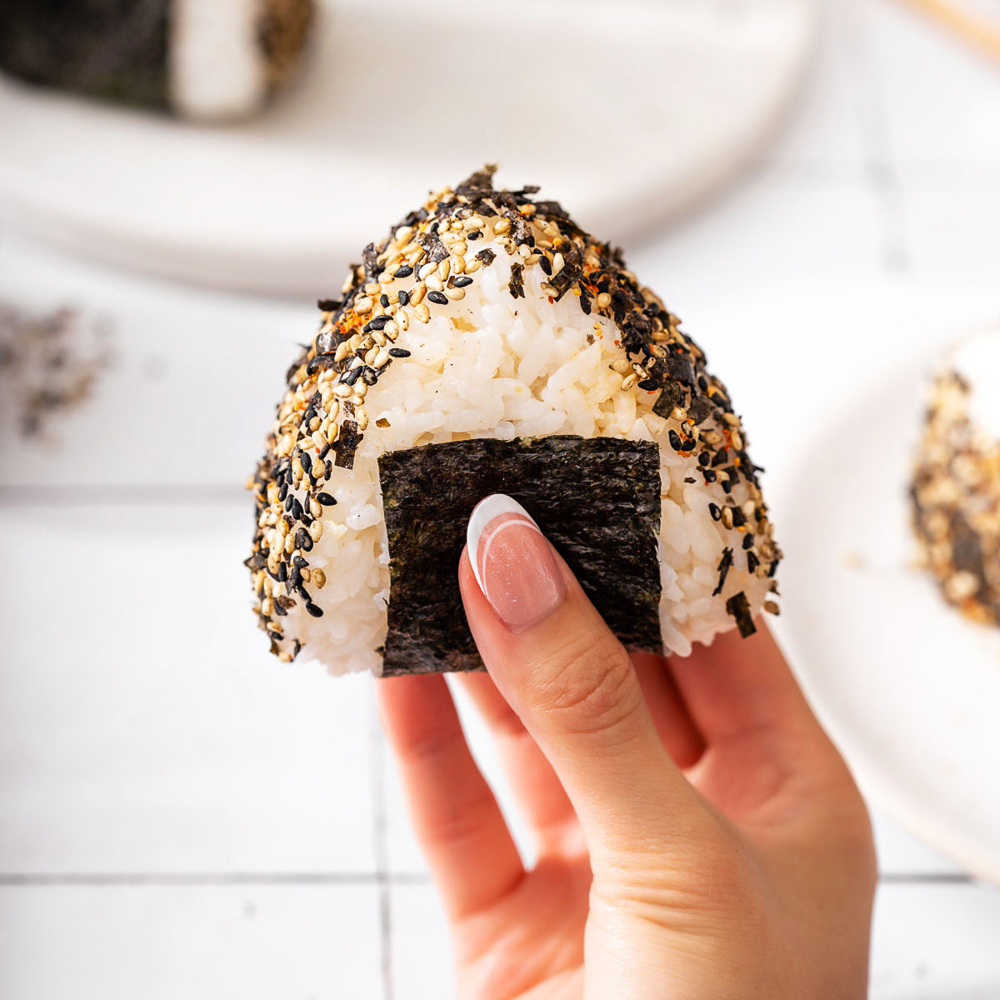

Home
Onigiri Recipe

Description
Onigiri (おにぎり), sometimes called Omusubi (おむすび), are Japanese rice balls. Tender, toothsome rice made portable, they are the classic comfort food for picnics (especially during the cherry blossom viewing), bento lunch boxes, quick grab-and-go snacks, hiking trips, movie snacks, etc.
Ingredients
- Japanese Short-Grain Rice
- Nori Seaweed
- Optional Fillings
Steps
- Cook short-grain rice with a rice cooker, pot over the stove, Instant Pot, or donabe.
- Using a mold or your hands, make rice balls. Don’t forget to salt rice balls for food safety. Fillings are optional and I share how to stuff rice balls with a filling in the recipe card.
- Wrap the rice ball with nori seaweed.